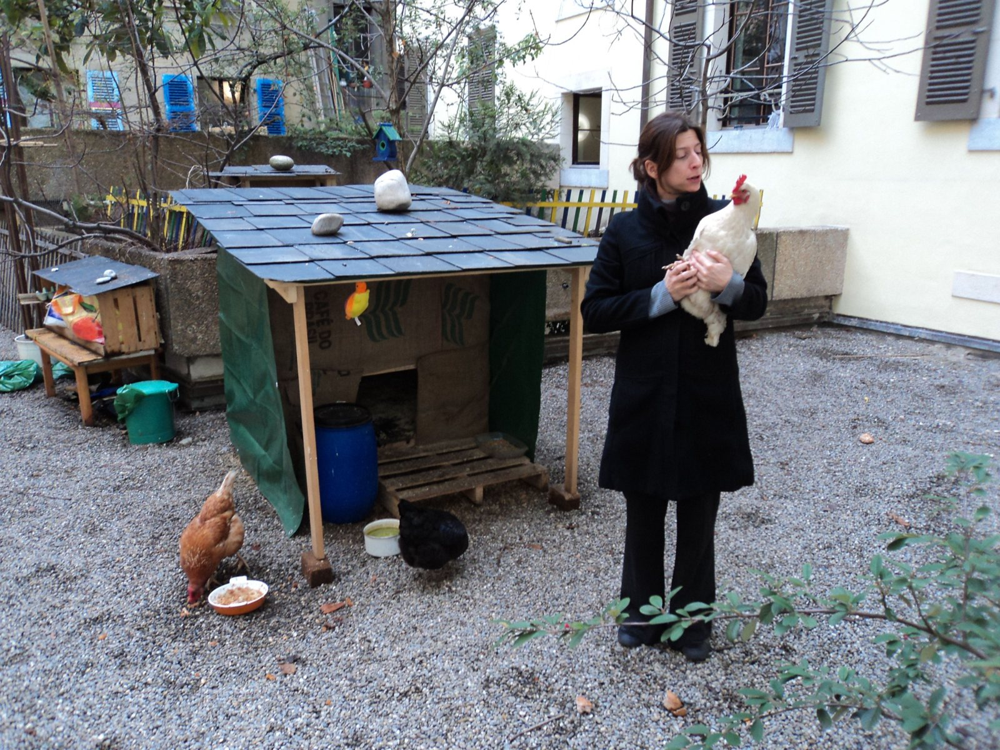
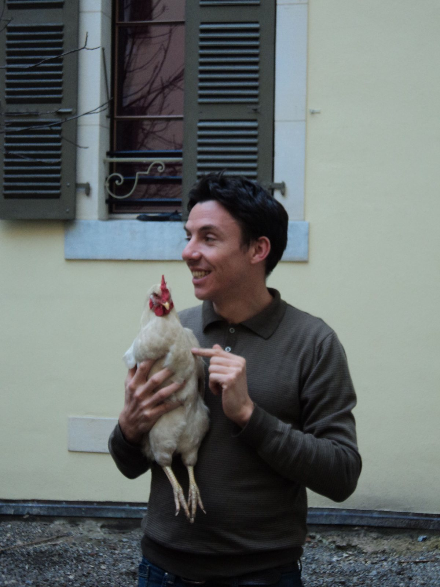
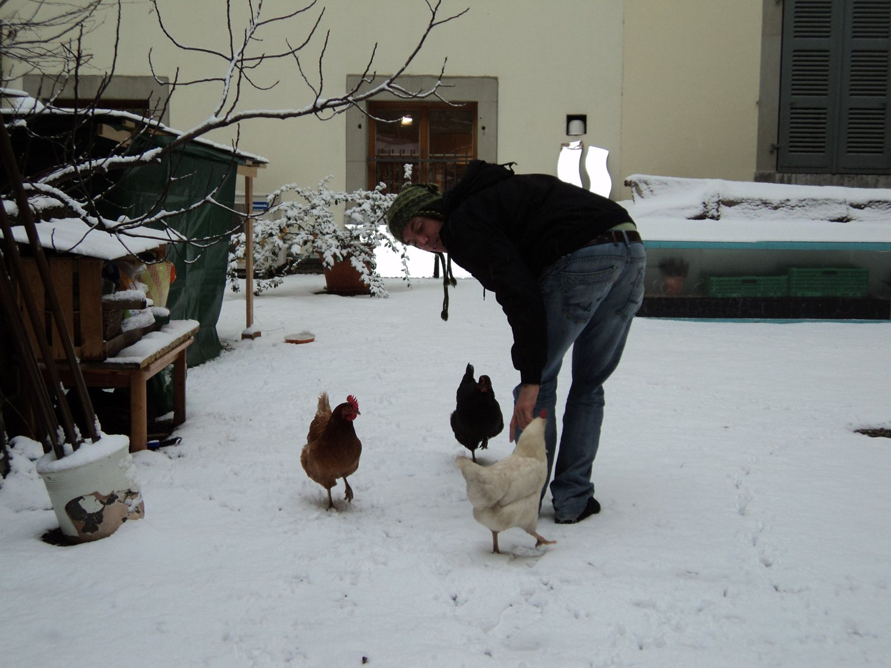
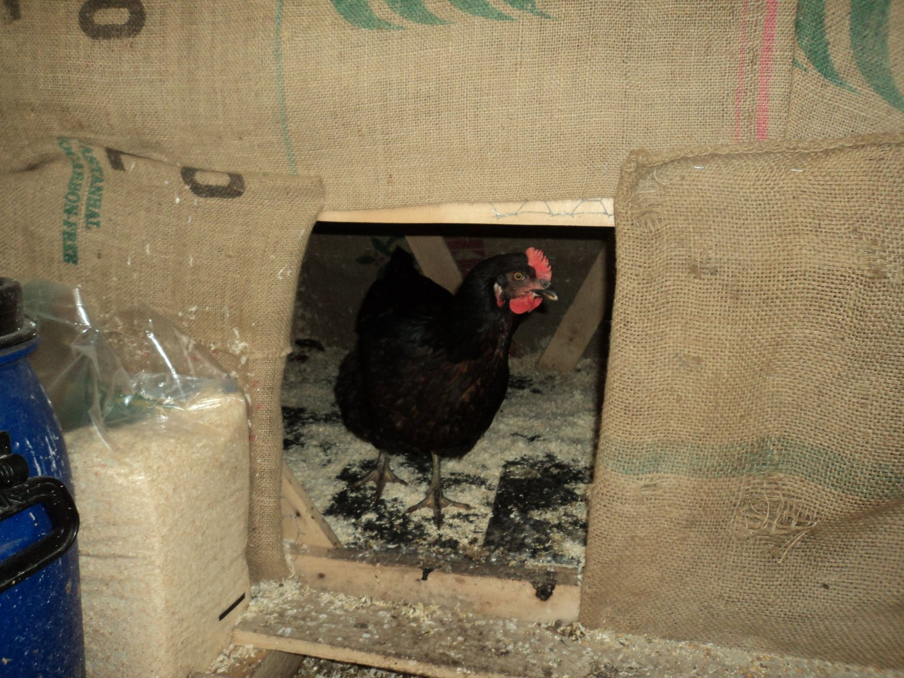
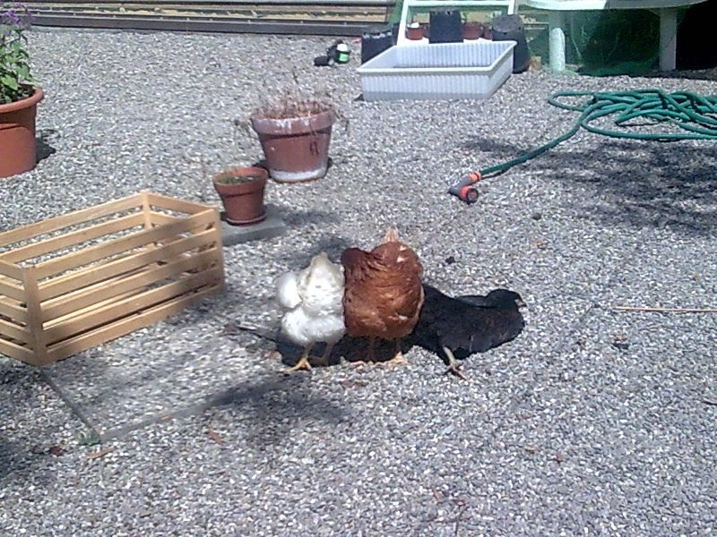

2010 – Trois poules, un poulailler et une petite révolution à Saint-Gervais

L'histoire de Blanchette, Roussette et Noireaude
À Saint-Gervais, les habitants n'ont jamais manqué d'imagination pour faire vivre leur quartier. Et parfois, les plus petites initiatives sont celles qui racontent les plus belles histoires de résistance, de solidarité et de liberté.
En 2010, dans la cour intérieure de l'îlot Rousseau–Lissignol, une idée un peu folle germe dans la tête de quelques habitants : et si nous installions un poulailler en plein centre-ville de Genève ?
Pas un élevage industriel, ni une exploitation commerciale. Simplement trois poules, un petit coin de verdure et l'envie de partager quelques œufs avec les habitants du quartier.


Trois nouvelles habitantes à Saint-Gervais
L'aventure commence par une expédition de trois acolytes du quartier, partis chercher des jeunes poules dans un élevage situé dans les hauteurs de Morges.
Le choix est rapidement fait : une blanche, une rousse et une noire. Histoire de varier les couleurs, mais aussi les personnalités !
Elles seront baptisées Blanchette, Roussette et Noireaude.
De retour à Genève, nos trois nouvelles habitantes découvrent leur résidence : un poulailler entièrement fabriqué avec des matériaux de récupération, installé au milieu de la cour intérieure.
Et attention, ce n'est pas du bricolage de fortune !
Nichoirs garnis de paille, perchoirs, copeaux au sol, mangeoires et eau fraîche : tout est prévu pour leur confort. Les trois pensionnaires peuvent également se promener dans la cour, gratter la terre et explorer les petits arbres et les broussailles.
Bref, un petit paradis pour trois poules citadines !
Des œufs pour tout le quartier
Mais le projet ne s'arrête pas là.
Les habitants décident que les œufs doivent profiter à tout le monde, et pas uniquement aux personnes qui s'occupent du poulailler.
Un arrangement est alors trouvé avec le sympathique boucher de la boucherie chevaline de la rue Rousseau, au numéro 14.
Les œufs y sont déposés et mis à disposition des habitants.
Pas de prix imposé, pas de commerce lucratif : chacun contribue selon ses moyens et son envie.
Une petite tirelire en forme de cochon est installée sur le comptoir de la boucherie pour recueillir les participations.
Un système simple, fondé sur la confiance, le partage et la solidarité.
Et surtout, une manière de rappeler qu'en plein centre-ville, il est encore possible d'imaginer d'autres formes de consommation et de vie collective.


Une charte pour protéger les poules
Dès le départ, les habitants prennent une décision importante.
Une charte est rédigée pour garantir que Blanchette, Roussette et Noireaude ne finiront jamais à la casserole.
Les trois poules ont le droit de vivre jusqu'à leur mort naturelle.
Elles ne sont pas considérées comme de simples machines à produire des œufs, mais comme de véritables habitantes du quartier.
Un engagement collectif qui, pour l'époque, ne manque pas d'originalité !
Quand l'administration découvre le poulailler…
Évidemment, à Saint-Gervais, toute initiative qui sort des habitudes administratives ne passe pas toujours inaperçue.
Il faut se rappeler qu'à cette époque, certains habitants engagés dans les projets associatifs sont encore volontiers considérés comme de vilains squatteurs, voire comme des profiteurs du centre-ville.
Et voilà qu'ils se mettent maintenant à élever des poules !
À la suite d'un signalement provenant des concierges des immeubles, les autorités vétérinaires cantonales sont informées de l'existence de ce mystérieux élevage urbain.
Le supposé responsable de cette entreprise hautement suspecte, Stéphane Olmos, est alors contacté par le vétérinaire cantonal.
Un rendez-vous est fixé dès le lendemain matin, à 9 heures précises.
Autant dire que l'affaire semble prise très au sérieux !
On imagine déjà les complications administratives, les règlements, les interdictions et les sanctions qui pourraient tomber sur cette petite initiative citoyenne.
De la dénonciation à la reconnaissance officielle !
Le lendemain, à 9 heures, le vétérinaire cantonal arrive sur place.
Il monte dans la cour intérieure et découvre le fameux poulailler.
Et là… surprise !
Loin de trouver une installation improvisée et insalubre, il découvre un aménagement soigneusement construit, propre, bien entretenu et parfaitement adapté aux besoins des animaux.
Des nichoirs confortables, de la paille, des perchoirs, de l'eau, de la nourriture et suffisamment d'espace pour permettre aux trois poules de se dégourdir les pattes.
Blanchette, Roussette et Noireaude peuvent tranquillement profiter de leur petit territoire au milieu de la végétation.
Selon le souvenir des habitants présents, le vétérinaire se montre particulièrement impressionné par la qualité de l'installation.
Et plutôt que de prononcer une sanction, il annonce une nouvelle pour le moins inattendue :
Le poulailler sera officiellement reconnu et inscrit dans les registres cantonaux !
Mieux encore, les habitants apprennent que leur installation pourrait accueillir jusqu'à cinquante poules.
Cinquante !
Autant dire qu'on était loin du projet initial !
Les habitants s'empressent de rassurer leur interlocuteur : il n'est absolument pas question de transformer la cour en exploitation avicole.
Trois poules suffisent largement au bonheur du quartier.
Et c'est ainsi qu'une initiative dénoncée comme potentiellement problématique se retrouve finalement reconnue par l'autorité chargée de contrôler les conditions de détention des animaux.
Une jolie petite victoire du bon sens sur les préjugés !
Quand les poules partaient faire leurs courses à la Placette
La vie de Blanchette, Roussette et Noireaude n'était cependant pas toujours de tout repos.
Car nos trois pensionnaires avaient parfois des envies d'indépendance !
Il arrivait qu'une poule trouve le moyen de quitter la cour intérieure pour rejoindre la rue Rousseau.
Et là, direction la Placette, qui est aujourd’hui devenue Manor !
Imaginez la scène : une poule se promenant tranquillement en plein centre-ville, au milieu des passants.
Mais le plus amusant, c'est que les habitants du quartier connaissaient parfaitement leurs trois petites voisines à plumes.
À peine une fugueuse était-elle repérée que quelqu'un se chargeait de la récupérer et de la ramener dans la cour.
Pas besoin d'appeler la police, ni de mobiliser les services municipaux !
À Saint-Gervais, même les poules bénéficiaient de la solidarité de voisinage.
Une belle aventure… et une séparation difficile
Pendant environ une année et demie, le poulailler fait partie de la vie quotidienne du quartier.
Les habitants s'organisent pour nourrir les poules, nettoyer leur espace et entretenir les installations.
Mais malgré les soins apportés et les nettoyages réguliers, une difficulté finit par apparaître.
En été, les odeurs deviennent parfois importantes dans cette cour intérieure entourée d'immeubles.
Et comme les relations de voisinage ne sont pas toujours simples, les habitants craignent de nouvelles plaintes.
Une décision difficile doit alors être prise.
Il faut trouver un nouvel endroit pour Blanchette, Roussette et Noireaude.
Mais pas question de renoncer à l'engagement pris dans la charte !
Les trois poules doivent pouvoir poursuivre leur existence jusqu'à leur mort naturelle.
Une solution est finalement trouvée auprès d'un vigneron-agriculteur bien connu de la région genevoise, installé à Soral.
Celui-ci accepte de les accueillir dans son nouveau poulailler et s'engage à leur offrir une retraite paisible, sans qu'elles finissent à la casserole.
C'est donc le cœur serré que les habitants accompagnent leurs trois petites pensionnaires vers leur nouvelle résidence.
Et l'histoire ne s'arrête pas là…
Quelques années plus tard, les initiatives de poulaillers urbains trouvent progressivement leur place dans les réflexions des autorités genevoises sur l'agriculture de proximité.
La Ville de Genève publie notamment des informations sur les possibilités de développer l'agriculture urbaine et les projets de poulaillers en ville.
Difficile de ne pas sourire en repensant à cette aventure.
Ce qui avait commencé par une initiative spontanée de quelques habitants, suscitant au départ méfiance et dénonciation, s'inscrivait finalement dans un mouvement que les institutions allaient elles-mêmes encourager.
Il serait évidemment exagéré de prétendre que Blanchette, Roussette et Noireaude ont, à elles seules, révolutionné la politique genevoise en matière d'agriculture urbaine.
Mais elles ont certainement contribué, à leur petite échelle, à démontrer qu'une autre manière d'habiter la ville était possible.
Trois poules et une certaine idée de la liberté
Au fond, cette histoire dépasse largement la simple construction d'un poulailler.
Elle raconte quelque chose de l'esprit qui animait les habitants de Saint-Gervais et des rues Lissignol et Rousseau.
Celui de ne pas attendre systématiquement l'autorisation des institutions pour imaginer, construire et faire vivre des projets collectifs.
Celui de considérer que les espaces communs ne sont pas uniquement des lieux soumis à des règlements, mais aussi des espaces de rencontre, de partage et d'expérimentation sociale.
Celui, enfin, de défendre une ville populaire, vivante et solidaire, dans laquelle les habitants peuvent agir directement sur leur environnement.
Et si les luttes pour le maintien des logements populaires ont marqué l'histoire du quartier, les petites initiatives quotidiennes ont elles aussi contribué à construire son identité.
Car après tout, il n'y a pas que les grandes révolutions qui font avancer les choses.
Parfois, il suffit de trois poules, de quelques planches récupérées, d'une tirelire en forme de cochon et d'une bonne dose d'imagination.
Blanchette, Roussette et Noireaude : trois petites habitantes qui auront, à leur manière, marqué l'histoire de Saint-Gervais !
Récit fondé sur les souvenirs et le témoignage de Stéphane Olmos, habitant et participant au projet du poulailler de la cour Rousseau–Lissignol, vers 2010–2012.